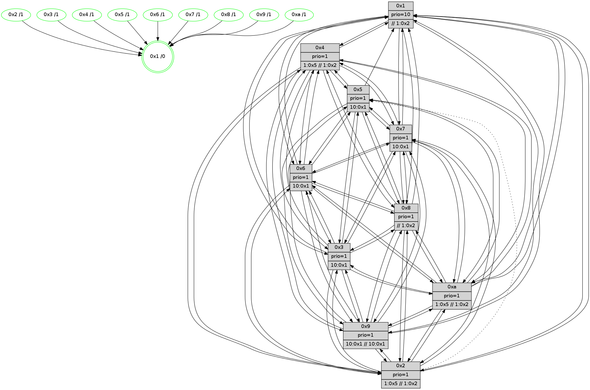

>> << IDX [start] -100 -25 -5 +0 +5 +25 +100 [665.611133099]
 Previous packets
----------------------------------------------------------------------
660.094218 beacon01(faad) #0 coord=01,02,03,04,05,06,07,0a,09,08 cycle=688.0ms assoc
-- color-indic=1 64 cd 57
660.104201 beacon02(faad) #0 coord=01,02,03,04,05,06,07,0a,09,08 cycle=688.0ms assoc 64 5e 66
660.114202 beacon03(faad) #0 coord=01,02,03,04,05,06,07,0a,09,08 cycle=688.0ms assoc 64 24 2b
660.124202 beacon04(faad) #0 coord=01,02,03,04,05,06,07,0a,09,08 cycle=688.0ms assoc 64 53 c1
660.134201 beacon05(faad) #0 coord=01,02,03,04,05,06,07,0a,09,08 cycle=688.0ms assoc 64 29 8c
660.144201 beacon06(faad) #0 coord=01,02,03,04,05,06,07,0a,09,08 cycle=688.0ms assoc 64 a7 5b
660.154201 beacon07(faad) #0 coord=01,02,03,04,05,06,07,0a,09,08 cycle=688.0ms assoc 64 dd 16
660.164206 beacon0a(faad) #0 coord=01,02,03,04,05,06,07,0a,09,08 cycle=688.0ms assoc 64 ac 1d
660.174207 beacon09(faad) #0 coord=01,02,03,04,05,06,07,0a,09,08 cycle=688.0ms assoc 64 22 ca
660.184208 beacon08(faad) #0 coord=01,02,03,04,05,06,07,0a,09,08 cycle=688.0ms assoc 64 58 87
660.196007 [Hello(10): seq=356 sym=6,2,3,8,9,5,7,4,1 sysInfo= stat=6:15,5,4,1/2:13,2,9,1/3:4,7,8,3/8:14,6,14,6/9:0,3,12,4/5:3,11,13,7/7:7,4,15,2/4:13,8,10,6/1:10,9,1,1]
660.198816 [STC(3)->1 #0.52 tree-change,inconsistent-stability,stable,to-color d=1]
660.200254 [STC(6)->1 #0.52 tree-change,inconsistent-stability,stable,to-color d=1]
660.201551 [Color(3) seq=88 @0:0 prio=1 >10.@1,1.@2,1.@5,1.@8]
660.203279 [Hello(2): seq=420 sym=4,5,7,6,3,9,8,10,1 sysInfo=hasWarning stat=4:11,6,0,4/5:14,10,11,6/7:13,7,4,3/6:2,15,1,4/3:3,1,12,1/9:3,14,13,1/8:11,9,10,4/10:11,8,14,4/1:8,2,12,1]
660.206029 [Color(7) seq=76 @0:0 prio=1 >10.@1,1.@2,1.@3,1.@5]
660.208031 [STC(2)->1 #0.52 tree-change,inconsistent-stability,stable,to-color d=1]
660.209787 [STC(10)->1 #0.52 tree-change,inconsistent-stability,stable,to-color d=1]
660.218317 [STC(5)->1 #0.52 tree-change,inconsistent-stability,stable,to-color d=1]
660.221227 [Color(5) seq=77 @0:0 prio=1]
660.223294 [Hello(9): seq=367 sym=5,2,3,4,7,6,8,10,1 sysInfo=hasWarning stat=5:11,11,15,8/2:13,3,5,5/3:0,15,12,6/4:2,13,15,5/7:13,2,5,3/6:5,9,0,5/8:4,4,6,2/10:3,14,3,7/1:7,5,3,1]
660.226113 [TreeStatus(6)-.->1 #0.52 tree-change,inconsistent-stability,stable child=1]
660.227695 [STC(9)->1 #0.52 tree-change,inconsistent-stability,stable,to-color d=1]
660.229525 [Color(6) seq=93 @0:0 prio=1 >10.@1,1.@2,1.@3,1.@5]
660.232979 [Color(9) seq=72 @0:0 prio=1 >10.@1,1.@2,1.@3,1.@5]
----------------------------------------------------------------------
660.882350 beacon01(faad) #0 coord=01,02,03,04,05,06,07,0a,09,08 cycle=688.0ms assoc
-- color-indic=1 64 19 62
660.892332 beacon02(faad) #0 coord=01,02,03,04,05,06,07,0a,09,08 cycle=688.0ms assoc 64 8a 53
660.902333 beacon03(faad) #0 coord=01,02,03,04,05,06,07,0a,09,08 cycle=688.0ms assoc 64 f0 1e
660.912335 beacon04(faad) #0 coord=01,02,03,04,05,06,07,0a,09,08 cycle=688.0ms assoc 64 87 f4
660.922334 beacon05(faad) #0 coord=01,02,03,04,05,06,07,0a,09,08 cycle=688.0ms assoc 64 fd b9
660.932332 beacon06(faad) #0 coord=01,02,03,04,05,06,07,0a,09,08 cycle=688.0ms assoc 64 73 6e
660.942334 beacon07(faad) #0 coord=01,02,03,04,05,06,07,0a,09,08 cycle=688.0ms assoc 64 09 23
660.952337 beacon0a(faad) #0 coord=01,02,03,04,05,06,07,0a,09,08 cycle=688.0ms assoc 64 78 28
660.962338 beacon09(faad) #0 coord=01,02,03,04,05,06,07,0a,09,08 cycle=688.0ms assoc 64 f6 ff
660.972338 beacon08(faad) #0 coord=01,02,03,04,05,06,07,0a,09,08 cycle=688.0ms assoc 64 8c b2
660.983286 [Hello(1): seq=333 sym=4,2,9,5,10,3,8,6,7 sysInfo=coloring-mode-on,ColoringModeRequestCalled stat=4:8,6,3,0/2:0,5,8,8/9:5,9,2,0/5:13,2,9,9/10:0,10,10,7/3:1,8,13,9/8:6,5,12,6/6:2,5,8,6/7:7,8,13,7]
660.987211 [Hello(3): seq=424 sym=1,7,6,2,4,8,9,10,5 sysInfo= stat=1:9,4,3,1/7:5,6,0,3/6:10,15,13,7/2:6,11,0,7/4:8,2,0,4/8:14,10,13,2/9:2,5,5,6/10:5,2,0,5/5:1,9,1,6]
660.990605 [Color(8) seq=104 @0:0 prio=1 >>1.@2,1.@3,1.@5]
660.993117 [Hello(4): seq=424 sym=5,7,6,2,3,9,8,10,1 sysInfo= stat=5:14,2,1,6/7:11,10,2,2/6:4,1,4,7/2:5,5,14,6/3:13,0,11,4/9:14,11,0,3/8:5,15,1,7/10:3,1,3,6/1:2,6,1,1]
660.995620 [Hello(6): seq=424 sym=2,3,5,4,7,9,8,10,1 sysInfo= stat=2:0,2,9,6/3:3,9,4,6/5:12,15,1,8/4:4,6,2,0/7:14,8,4,1/9:15,15,3,6/8:9,2,2,5/10:14,2,9,6/1:5,6,14,1]
660.999940 [Color(10) seq=82 @0:0 prio=1 >1.@5 >>1.@2,1.@3,1.@5]
661.010358 [Hello(7): seq=424 sym=2,3,5,6,4,8,9,10,1 sysInfo=hasWarning stat=2:9,14,9,9/3:13,8,4,8/5:10,2,4,10/6:1,15,3,2/4:0,9,6,6/8:0,8,6,4/9:13,11,5,8/10:14,0,8,7/1:9,4,0,1]
----------------------------------------------------------------------
661.670480 beacon01(faad) #0 coord=01,02,03,04,05,06,07,0a,09,08 cycle=688.0ms assoc
-- color-indic=1 64 a5 67
661.680463 beacon02(faad) #0 coord=01,02,03,04,05,06,07,0a,09,08 cycle=688.0ms assoc 64 36 56
661.690464 beacon03(faad) #0 coord=01,02,03,04,05,06,07,0a,09,08 cycle=688.0ms assoc 64 4c 1b
661.700463 beacon04(faad) #0 coord=01,02,03,04,05,06,07,0a,09,08 cycle=688.0ms assoc 64 3b f1
661.710464 beacon05(faad) #0 coord=01,02,03,04,05,06,07,0a,09,08 cycle=688.0ms assoc 64 41 bc
661.720463 beacon06(faad) #0 coord=01,02,03,04,05,06,07,0a,09,08 cycle=688.0ms assoc 64 cf 6b
661.730463 beacon07(faad) #0 coord=01,02,03,04,05,06,07,0a,09,08 cycle=688.0ms assoc 64 b5 26
661.740469 beacon0a(faad) #0 coord=01,02,03,04,05,06,07,0a,09,08 cycle=688.0ms assoc 64 c4 2d
661.750469 beacon09(faad) #0 coord=01,02,03,04,05,06,07,0a,09,08 cycle=688.0ms assoc 64 4a fa
661.760468 beacon08(faad) #0 coord=01,02,03,04,05,06,07,0a,09,08 cycle=688.0ms assoc 64 30 b7
661.771691 [Hello(8): seq=368 sym=5,2,3,4,7,6,9,10,1 sysInfo=hasWarning,coloring-mode-on,ColoringModeIndicationCalled stat=5:11,11,2,6/2:1,2,9,1/3:15,10,0,8/4:5,6,3,6/7:0,3,3,5/6:9,8,15,7/9:2,4,3,5/10:11,9,2,6/1:15,14,1,0]
661.774824 [Color(3) seq=89 @0:0 prio=1 >10.@1,1.@2,1.@5,1.@8]
661.776893 [Hello(5): seq=425 sym=7,6,4,3,1,9,8,10 sysInfo= stat=7:8,11,4,3/6:9,14,3,6/4:0,5,14,5/3:13,2,12,4/1:11,12,0,1/9:6,6,2,3/8:6,1,11,4/10:6,3,2,5]
661.779742 [Color(1) seq=105 @0:0 prio=10 >>1.@2,1.@3,1.@5]
661.781629 [Hello(2): seq=421 sym=4,7,6,3,9,8,10,1 sysInfo=hasWarning stat=4:12,7,0,4/7:14,7,4,3/6:3,0,1,5/3:4,1,13,1/9:4,15,14,1/8:11,10,10,4/10:12,9,14,4/1:9,2,12,1]
661.784850 [Color(5) seq=78 @0:0 prio=1]
661.786330 [Color(7) seq=77 @0:0 prio=1 >10.@1,1.@2,1.@3,1.@5]
661.789812 [Color(6) seq=94 @0:0 prio=1 >10.@1,1.@2,1.@3,1.@5]
661.791490 [Hello(9): seq=368 sym=5,2,3,4,7,6,8,10,1 mpr= sysInfo=hasWarning stat=5:11,11,15,8/2:13,3,5,5/3:1,15,13,6/4:3,13,15,5/7:14,2,5,3/6:6,9,0,5/8:5,5,6,2/10:3,15,3,7/1:8,5,3,1]
661.795601 [Color(9) seq=73 @0:0 prio=1 >10.@1,1.@2,1.@3,1.@5]
661.797572 [Hello(10): seq=357 sym=6,2,3,8,9,5,7,4,1 sysInfo= stat=6:15,6,4,2/2:13,3,9,1/3:4,7,8,3/8:14,6,14,6/9:1,4,13,4/5:3,12,14,7/7:8,4,15,2/4:13,8,10,6/1:11,10,1,1]
661.800462 [Color(4) seq=68 @0:0 prio=1 >1.@5 >>1.@2,1.@3,1.@5]
661.802335 [Color(2) seq=70 @0:0 prio=1 >1.@5 >>1.@2,1.@3,1.@5]
----------------------------------------------------------------------
662.458611 beacon01(faad) #0 coord=01,02,03,04,05,06,07,0a,09,08 cycle=688.0ms assoc
-- color-indic=1 64 61 69
662.468592 beacon02(faad) #0 coord=01,02,03,04,05,06,07,0a,09,08 cycle=688.0ms assoc 64 f2 58
662.478593 beacon03(faad) #0 coord=01,02,03,04,05,06,07,0a,09,08 cycle=688.0ms assoc 64 88 15
662.488595 beacon04(faad) #0 coord=01,02,03,04,05,06,07,0a,09,08 cycle=688.0ms assoc 64 ff ff
662.498595 beacon05(faad) #0 coord=01,02,03,04,05,06,07,0a,09,08 cycle=688.0ms assoc 64 85 b2
662.508595 beacon06(faad) #0 coord=01,02,03,04,05,06,07,0a,09,08 cycle=688.0ms assoc 64 0b 65
662.518594 beacon07(faad) #0 coord=01,02,03,04,05,06,07,0a,09,08 cycle=688.0ms assoc 64 71 28
662.528598 beacon0a(faad) #0 coord=01,02,03,04,05,06,07,0a,09,08 cycle=688.0ms assoc 64 00 23
662.538599 beacon09(faad) #0 coord=01,02,03,04,05,06,07,0a,09,08 cycle=688.0ms assoc 64 8e f4
662.548600 beacon08(faad) #0 coord=01,02,03,04,05,06,07,0a,09,08 cycle=688.0ms assoc 64 f4 b9
662.560186 [Hello(1): seq=334 sym=4,2,9,5,10,3,8,6,7 sysInfo=coloring-mode-on,ColoringModeRequestCalled stat=4:9,7,3,0/2:1,6,8,8/9:6,10,2,0/5:13,3,9,9/10:1,11,10,7/3:2,8,13,9/8:7,6,12,6/6:3,6,8,6/7:8,9,13,7]
662.562968 [Hello(7): seq=425 sym=2,3,5,6,4,8,9,10,1 sysInfo=hasWarning stat=2:9,15,9,9/3:13,8,4,8/5:10,2,4,10/6:1,0,3,2/4:0,10,6,6/8:1,8,6,4/9:14,12,5,8/10:15,0,8,7/1:9,4,0,1]
662.566468 [Color(10) seq=83 @0:0 prio=1 >1.@5 >>1.@2,1.@3,1.@5]
662.572070 [Hello(3): seq=425 sym=1,7,6,2,4,8,9,10,5 sysInfo= stat=1:9,5,3,1/7:6,7,0,3/6:11,0,13,7/2:7,12,0,7/4:9,3,0,4/8:15,11,13,2/9:3,6,5,6/10:6,3,0,5/5:2,10,1,6]
662.578461 [Hello(6): seq=425 sym=2,3,5,4,7,9,8,10,1 sysInfo= stat=2:0,3,9,6/3:3,9,4,6/5:12,15,1,8/4:4,7,2,0/7:15,8,4,1/9:0,0,3,6/8:10,2,2,5/10:15,3,9,6/1:5,6,14,1]
662.582639 [Color(8) seq=105 @0:0 prio=1 >>1.@2,1.@3,1.@5]
----------------------------------------------------------------------
663.246740 beacon01(faad) #0 coord=01,02,03,04,05,06,07,0a,09,08 cycle=688.0ms assoc
-- color-indic=1 64 dd 6c
663.256723 beacon02(faad) #0 coord=01,02,03,04,05,06,07,0a,09,08 cycle=688.0ms assoc 64 4e 5d
663.266722 beacon03(faad) #0 coord=01,02,03,04,05,06,07,0a,09,08 cycle=688.0ms assoc 64 34 10
663.276723 beacon04(faad) #0 coord=01,02,03,04,05,06,07,0a,09,08 cycle=688.0ms assoc 64 43 fa
663.286723 beacon05(faad) #0 coord=01,02,03,04,05,06,07,0a,09,08 cycle=688.0ms assoc 64 39 b7
663.296722 beacon06(faad) #0 coord=01,02,03,04,05,06,07,0a,09,08 cycle=688.0ms assoc 64 b7 60
663.306724 beacon07(faad) #0 coord=01,02,03,04,05,06,07,0a,09,08 cycle=688.0ms assoc 64 cd 2d
663.316729 beacon0a(faad) #0 coord=01,02,03,04,05,06,07,0a,09,08 cycle=688.0ms assoc 64 bc 26
663.326727 beacon09(faad) #0 coord=01,02,03,04,05,06,07,0a,09,08 cycle=688.0ms assoc 64 32 f1
663.336731 beacon08(faad) #0 coord=01,02,03,04,05,06,07,0a,09,08 cycle=688.0ms assoc 64 48 bc
663.348257 [Hello(8): seq=369 sym=5,2,3,4,7,6,9,10,1 sysInfo=hasWarning,coloring-mode-on,ColoringModeIndicationCalled stat=5:12,12,2,6/2:2,3,9,1/3:15,11,0,8/4:5,7,3,6/7:0,4,3,5/6:9,9,15,7/9:3,5,3,5/10:12,9,2,6/1:0,15,1,0]
663.351118 [Color(7) seq=78 @0:0 prio=1 >10.@1,1.@2,1.@3,1.@5]
663.353483 [STC(1) #0.53 tree-change,inconsistent-stability,stable,to-color d=0]
663.356311 [Hello(2): seq=422 sym=4,7,6,3,9,8,10,1 sysInfo=hasWarning stat=4:13,7,0,4/7:15,7,4,3/6:4,0,1,5/3:5,2,13,1/9:4,15,14,1/8:12,11,10,4/10:12,9,14,4/1:10,2,12,1]
663.359950 [Color(2) seq=71 @0:0 prio=1 >1.@5 >>1.@2,1.@3,1.@5]
663.362103 [Hello(10): seq=358 sym=6,2,3,8,9,5,7,4,1 sysInfo= stat=6:0,6,4,2/2:13,4,9,1/3:5,7,8,3/8:14,7,14,6/9:1,4,13,4/5:3,12,14,7/7:8,4,15,2/4:13,9,10,6/1:12,10,1,1]
663.365534 [Hello(5): seq=426 sym=7,6,4,3,1,9,8,10 sysInfo= stat=7:9,12,4,3/6:10,15,3,6/4:1,6,14,5/3:14,2,12,4/1:12,12,0,1/9:7,7,2,3/8:7,2,11,4/10:7,3,2,5]
663.371894 [Color(9) seq=74 @0:0 prio=1 >10.@1,1.@2,1.@3,1.@5]
663.377203 [Color(3) seq=90 @0:0 prio=1 >10.@1,1.@2,1.@5,1.@8]
663.379337 [Color(1) seq=106 @0:0 prio=10 >>1.@2,1.@3,1.@5]
663.389768 [Color(5) seq=79 @0:0 prio=1 >10.@1,1.@2,1.@3,1.@4]
----------------------------------------------------------------------
664.034871 beacon01(faad) #0 coord=01,02,03,04,05,06,07,0a,09,08 cycle=688.0ms assoc
-- color-indic=1 64 e9 74
664.044853 beacon02(faad) #0 coord=01,02,03,04,05,06,07,0a,09,08 cycle=688.0ms assoc 64 7a 45
664.054854 beacon03(faad) #0 coord=01,02,03,04,05,06,07,0a,09,08 cycle=688.0ms assoc 64 00 08
664.064854 beacon04(faad) #0 coord=01,02,03,04,05,06,07,0a,09,08 cycle=688.0ms assoc 64 77 e2
664.074854 beacon05(faad) #0 coord=01,02,03,04,05,06,07,0a,09,08 cycle=688.0ms assoc 64 0d af
664.084856 beacon06(faad) #0 coord=01,02,03,04,05,06,07,0a,09,08 cycle=688.0ms assoc 64 83 78
664.094854 beacon07(faad) #0 coord=01,02,03,04,05,06,07,0a,09,08 cycle=688.0ms assoc 64 f9 35
664.104858 beacon0a(faad) #0 coord=01,02,03,04,05,06,07,0a,09,08 cycle=688.0ms assoc 64 88 3e
664.114858 beacon09(faad) #0 coord=01,02,03,04,05,06,07,0a,09,08 cycle=688.0ms assoc 64 06 e9
664.124862 beacon08(faad) #0 coord=01,02,03,04,05,06,07,0a,09,08 cycle=688.0ms assoc 64 7c a4
664.136158 [Hello(1): seq=335 sym=4,2,9,10,3,8,6,7 sysInfo=coloring-mode-on,ColoringModeRequestCalled stat=4:9,7,3,0/2:1,6,8,8/9:6,10,2,0/10:1,12,10,7/3:3,8,13,9/8:8,7,12,6/6:4,6,8,6/7:9,9,13,7]
664.139420 [Hello(3): seq=426 sym=1,7,6,2,4,8,9,10,5 sysInfo= stat=1:9,6,3,1/7:6,7,0,3/6:12,0,13,7/2:7,12,0,7/4:9,3,0,4/8:0,12,13,2/9:3,6,5,6/10:6,3,0,5/5:2,11,1,6]
664.142423 [Hello(6): seq=426 sym=2,3,5,4,7,9,8,10,1 sysInfo= stat=2:0,3,9,6/3:3,10,4,6/5:12,0,1,8/4:4,7,2,0/7:15,8,4,1/9:0,1,3,6/8:11,3,2,5/10:15,3,9,6/1:5,7,14,1]
664.144905 [Color(10) seq=84 @0:0 prio=1 >1.@5 >>1.@2,1.@3,1.@4]
664.147237 [Hello(4): seq=426 sym=5,7,6,2,3,9,8,10,1 sysInfo= stat=5:15,3,1,6/7:12,10,2,2/6:6,1,4,7/2:5,6,14,6/3:14,1,11,4/9:15,12,0,3/8:7,0,1,7/10:3,2,3,6/1:2,7,1,1]
664.154459 [Hello(7): seq=426 sym=2,3,5,6,4,8,9,10,1 sysInfo=hasWarning stat=2:10,0,9,9/3:14,9,4,8/5:11,3,4,10/6:2,1,3,2/4:0,10,6,6/8:2,9,6,4/9:14,13,5,8/10:0,1,8,7/1:9,5,1,1]
664.158614 [STC(8)->1 #0.53 tree-change,inconsistent-stability,stable,to-color d=1]
664.159985 [STC(7)->1 #0.53 tree-change,inconsistent-stability,stable,to-color d=1]
664.162480 [Color(8) seq=106 @0:0 prio=1 >>1.@2,1.@3,1.@4]
----------------------------------------------------------------------
664.823002 beacon01(faad) #0 coord=01,02,03,04,05,06,07,0a,09,08 cycle=688.0ms assoc
-- color-indic=1 64 55 71
664.832985 beacon02(faad) #0 coord=01,02,03,04,05,06,07,0a,09,08 cycle=688.0ms assoc 64 c6 40
664.842985 beacon03(faad) #0 coord=01,02,03,04,05,06,07,0a,09,08 cycle=688.0ms assoc 64 bc 0d
664.852985 beacon04(faad) #0 coord=01,02,03,04,05,06,07,0a,09,08 cycle=688.0ms assoc 64 cb e7
664.862984 beacon05(faad) #0 coord=01,02,03,04,05,06,07,0a,09,08 cycle=688.0ms assoc 64 b1 aa
664.872984 beacon06(faad) #0 coord=01,02,03,04,05,06,07,0a,09,08 cycle=688.0ms assoc 64 3f 7d
664.882986 beacon07(faad) #0 coord=01,02,03,04,05,06,07,0a,09,08 cycle=688.0ms assoc 64 45 30
664.892991 beacon0a(faad) #0 coord=01,02,03,04,05,06,07,0a,09,08 cycle=688.0ms assoc 64 34 3b
664.902991 beacon09(faad) #0 coord=01,02,03,04,05,06,07,0a,09,08 cycle=688.0ms assoc 64 ba ec
664.912992 beacon08(faad) #0 coord=01,02,03,04,05,06,07,0a,09,08 cycle=688.0ms assoc 64 c0 a1
664.924206 [Hello(10): seq=359 sym=6,2,3,8,9,5,7,4,1 sysInfo= stat=6:0,7,4,2/2:13,4,9,1/3:5,8,8,3/8:14,8,15,6/9:1,5,13,4/5:4,13,14,7/7:9,4,0,2/4:14,9,10,6/1:13,11,1,1]
664.927247 [Color(1) seq=107 @0:0 prio=10 >>1.@2,1.@3,1.@4]
664.929115 [Color(4) seq=70 @0:0 prio=1 >1.@5 >>1.@2,1.@3,1.@4]
664.931061 [Hello(9): seq=370 sym=5,2,3,4,7,6,8,10,1 sysInfo=hasWarning stat=5:11,12,15,8/2:13,4,5,5/3:3,1,13,6/4:5,14,15,5/7:0,3,6,3/6:8,9,0,5/8:7,7,7,2/10:4,0,3,7/1:10,6,3,1]
664.935168 [Color(9) seq=75 @0:0 prio=1 >10.@1,1.@2,1.@3,1.@5 >>10.@1,1.@2,1.@3]
664.942020 [Color(5) seq=80 @0:0 prio=1 >10.@1,1.@2,1.@3,1.@4]
664.944028 [Color(3) seq=91 @0:0 prio=1 >10.@1,1.@2,1.@5,1.@8]
664.946177 [Hello(2): seq=423 sym=4,7,6,3,9,8,10,1 asym=5 sysInfo=hasWarning stat=4:14,7,0,4/7:0,8,5,3/6:5,1,1,5/3:6,3,13,1/9:4,0,14,1/8:13,12,11,4/10:12,10,14,4/1:11,3,12,1/5:0,1,0,0]
664.949412 [Color(7) seq=79 @0:0 prio=1 >10.@1,1.@2,1.@3,1.@5]
664.951319 [Color(2) seq=72 @0:0 prio=1 >1.@5 >>1.@2,1.@3,1.@4]
664.955101 [Color(6) seq=96 @0:0 prio=1 >10.@1,1.@2,1.@3,1.@5]